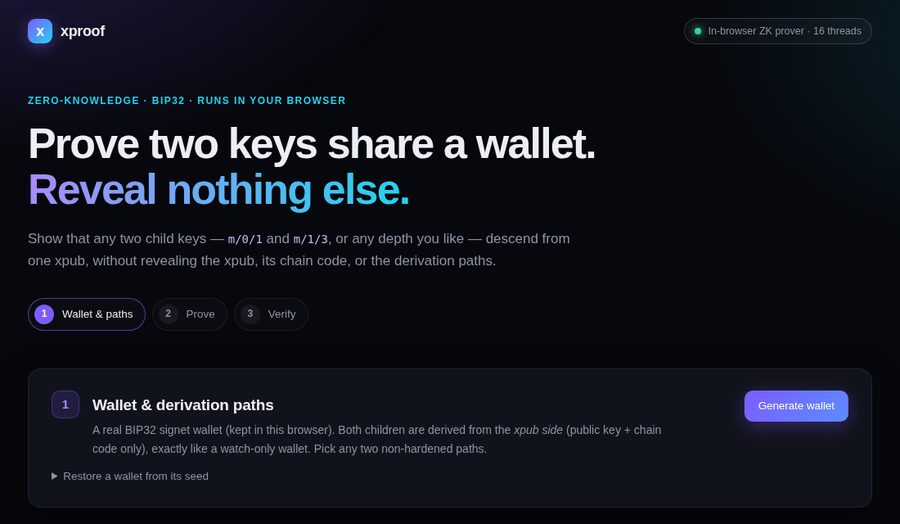

xproof · portlandhodl · statement xproof-ownership-link-v1
Prove two keys share a wallet. Reveal nothing else.
A zero-knowledge proof that two public keys descend from one BIP32 xpub, without revealing the xpub, its chain code, or the derivation paths. Runs in the browser, on signet.
github.com/portlandhodl/xproof · live demo · draft spec, demo implementation
The problem
Showing your xpub links every key you'll ever use
- Public (non-hardened) derivation needs only the xpub:
I = HMAC-SHA512(c, ser_P(K) ‖ ser32(i)), childK′ = K + IL·G, chain codec′ = IR. - Worse: an xpub plus any one non-hardened child private key recovers the parent private key.
The statement
Two keys go public. The tree stays hidden.
Also enforced: key A ≠ key B, every index non-hardened, no invalid derivation step. The context hash and expiry stop a proof being replayed in another session.
Inside the circuit
Elliptic-curve addition, smuggled through ECDSA verify
The Noir circuit has no native secp256k1 math. Each derivation step C = K + t·G is checked with Barretenberg's ECDSA-verification black box, run twice:
// prover supplies child point C as a hint; t = parse256(HMAC-SHA512(...)[0..32]) (A) forward: V(K, t·x(C), (x(C), s₁)) ⇒ x(K + t·G) ≡ x(C) (B) back: V(C, −t·x(K), (x(K), s₂)) ⇒ x(C − t·G) ≡ x(K) with s ∈ {r, n − r}, so ECDSA's R = (e/s)·G + (r/s)·Q collapses to Q ± t·G
Why two checks
(A) alone only fixes the x-coordinate. (B) pins the y-parity, so a prover can't claim the negated key −KA. The test suite includes that attack, and the circuit rejects it.
Same work every time
Always 3 steps per path; shorter paths repeat a no-op step. Proving time can't leak the path length.
Cost
1,757,751 gates (2²¹): 22 SHA-512 compressions (~65k gates each) and 12 ECDSA gadgets (~38k each).
The protocol
Prove, anchor on-chain, verify
The verifier checks the proof against a pinned verification key, then context_hash and expiry, then the anchor. It derives the address from key_b itself and trusts no transaction data from the prover.
Two backends, one relation
In your browser, or on your own server
In-browser (default)
Noir → Barretenberg UltraHonk, WASM. Witness never leaves the tab.
- Proof: 10,688 bytes
- Max path depth: 3
- ~65 s on 16 threads (witness 6 s + proving 49 s); ~4.6 min single-threaded
- Downloads ~4 MB circuit + 64 MB setup params per proof
- Setup: universal (Aztec Ignition SRS)
Server: SP1 → Groth16
Rust guest in the SP1 zkVM, STARK wrapped in Groth16. The xpub is sent to the server: run it only on hardware you control.
- Proof: 356 bytes
- Max path depth: 16
- ~3.7 min (first run downloads ~8 GB of circuit files)
- Setup: SP1's circuit-specific Groth16 setup
- Never emits a bare STARK: it isn't zero-knowledge
Timings measured in headless Chromium on an 88-core server (README). Both proofs are verifiable on-chain; verification takes under a second.
What it does not prove
Knowing the xpub is not owning the coins
Not spend authority
Anyone with the xpub, e.g. a watch-only auditor, can make the same proof. Spend authority comes only from the anchor.
Anchor can be old
A past spend shows someone controlled key B once, not now. The spec suggests also requiring a fresh signature by key B over the context hash.
Proofs can be forwarded
Anyone holding the file can verify the link. The context stops reuse as a login, but the link is public forever once revealed.
Trusted setups
UltraHonk relies on the Ignition ceremony (1-of-N honest); Groth16 on Succinct's setup.
Demo only
Signet only; the seed lives in localStorage. Draft spec, no audit mentioned.
Hardened paths
Out of scope: hardened derivation needs the parent private key, and the prover is assumed to hold only an xpub.
Try it · discuss
Where would you use this?

- Proving to an exchange or auditor that a deposit and a withdrawal address are yours, without handing over the xpub. Is a link proof enough, or do they really need spend proofs?
- Once two keys are proven linked, that link is public forever. When is that a privacy win, and when a loss?
- 65 seconds in a browser, 356 bytes from a server. Which matters more for real deployments?